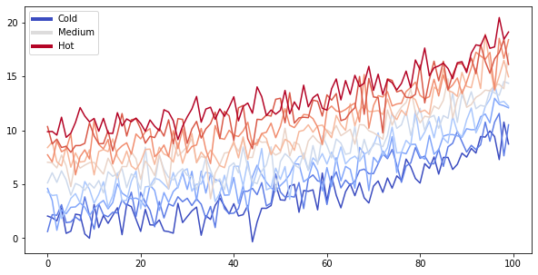

Uso de Jupyter - Notebook¶
from matplotlib import rcParams, cycler
import matplotlib.pyplot as plt
import numpy as np
plt.ion()
<matplotlib.pyplot._IonContext at 0x7fe985cb3cd0>
# Fixing random state for reproducibility
np.random.seed(19680801)
N = 10
data = [np.logspace(0, 1, 100) + np.random.randn(100) + ii for ii in range(N)]
data = np.array(data).T
cmap = plt.cm.coolwarm
rcParams['axes.prop_cycle'] = cycler(color=cmap(np.linspace(0, 1, N)))
from matplotlib.lines import Line2D
custom_lines = [Line2D([0], [0], color=cmap(0.), lw=4),
Line2D([0], [0], color=cmap(.5), lw=4),
Line2D([0], [0], color=cmap(1.), lw=4)]
fig, ax = plt.subplots(figsize=(10, 5))
lines = ax.plot(data)
ax.legend(custom_lines, ['Cold', 'Medium', 'Hot']);

There is a lot more that you can do with outputs (such as including interactive outputs) with your book. For more information about this, see the Jupyter Book documentation